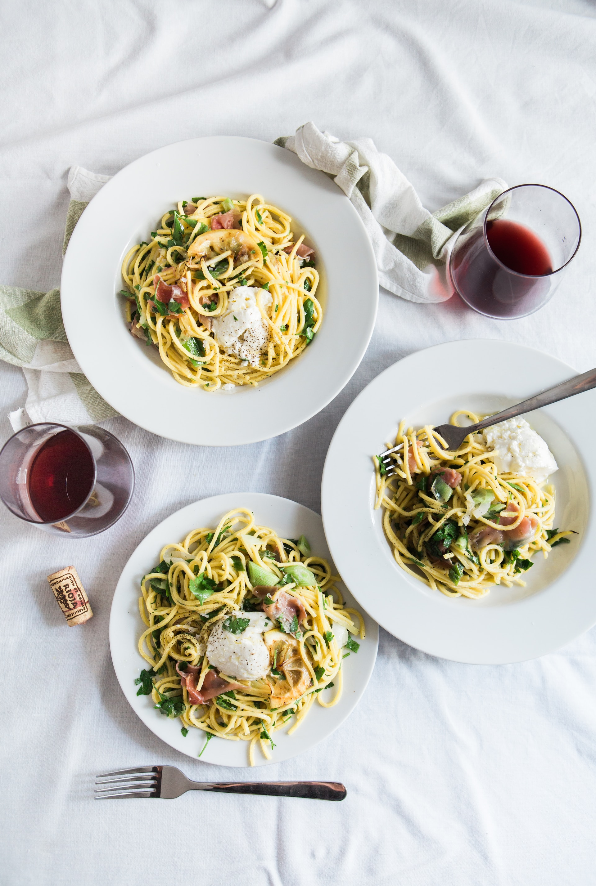
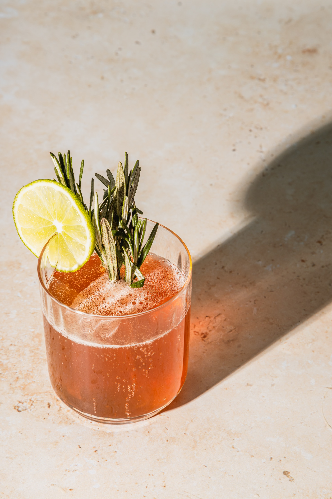

Receitas
Salada Caesar

Ingredientes
- Alface romana
- Croutons
- Queijo parmesão ralado
- Molho Caesar
Modo de Preparo
- Lave e rasgue as folhas de alface romana.
- Adicione croutons e queijo parmesão por cima.
- Regue com molho Caesar a gosto.
Macarrão Alfredo
Ingredientes
- 200g de macarrão
- 200ml de creme de leite
- 50g de queijo parmesão ralado
- Sal e pimenta a gosto
Modo de Preparo
- Cozinhe o macarrão de acordo com as instruções da embalagem e escorra.
- Em uma panela, aqueça o creme de leite em fogo baixo.
- Adicione o queijo parmesão e mexa até derreter.
- Tempere com sal e pimenta.
- Misture o molho com o macarrão cozido.
Nome Receita
Ingredientes
- 1 xícara de morangos
- 1/2 xícara de iogurte
- 1/2 xícara de leite
- 1 colher de sopa de mel
Modo de Preparo
- Coloque todos os ingredientes no liquidificador.
- Bata até obter uma mistura suave e homogênea.
- Sirva imediatamente.